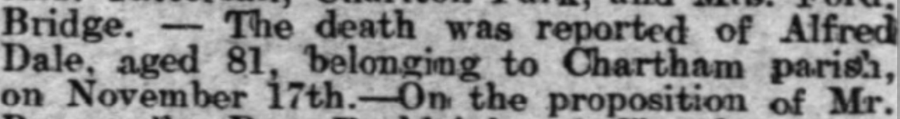

Alfred Dale c1833 - 1912
[ Home ] | [ Calendar ] | [ Surnames Index ] | [ Errors ] | [ Family History ]The child of Edward Dale and Rebecca Crockford, Alfred Dale, the three times great-uncle of Nigel Horne, was born in Chartham Hatch, Kent, England c. 18331,2,3, was baptised in Chartham, Kent, England on 3 Mar 1833 and married Charlotte Kennett (with whom he had 5 children: Alfred, Edward William, Thomas, Albert Jack and Esther, along with 2 surviving children) at St Mildred's Church, Canterbury, Kent, England on 30 Nov 18565. Like his father, he was an agricultural labourer.
During his life, he was living at his birthplace on 6 Jun 18411; at New House Farm, Thanington, Kent on 30 Mar 18519; in Marshside, Kent, England on 2 Apr 18716; at London Road, Harbledown, Kent on 3 Apr 18812; on Plough Lane, Harbledown, Kent on 5 Apr 18913; at his birthplace on 31 Mar 19017 (the same place as his father had been living on 30 Mar 1851); and at Shalmsford Street in Chartham on 2 Apr 19118.
He died on 17 Nov 1912 in Bridge, Kent, England4.
Parents
- Edward was born in 1806
- Rebecca was born in 1805
Children
- Edward William was born c. Aug 1859
- Thomas was born c. 1866
- Esther was born c. 1869
Citations
- 1841 England, Wales & Scotland Census - Findmypast (was age 9)
- 1881 England, Wales & Scotland Census - Findmypast (was age 49 and the head of the household)
- 1891 England, Wales & Scotland Census - Findmypast (was age 59 and the head of the household)
- England & Wales deaths 1837-2007 - Findmypast
- England & Wales Marriages 1837-2005 - Findmypast
- 1871 England, Wales & Scotland Census - Findmypast (was age 38 and the head of the household)
- 1901 England, Wales & Scotland Census - Findmypast (was age 67 and the head of the household)
- 1911 Census for England & Wales - Findmypast (was age 79 and the father of the head of the household)
- 1851 England, Wales & Scotland Census - Findmypast (was age 18 and a servant in the household)
Media
Whitstable Times and Herne Bay Herald 7 Dec 1912

1841 England, Wales & Scotland Census - GBC/1841/0014002935
England & Wales marriages 1837-2005 - BMD/M/1856/4/BL/000254/036
Kent, Canterbury Archdeaconry marriages - GBPRS/CANT/M/97062425/1
England & Wales deaths 1837-2007 - BMD/D/1912/4/AZ/000190/118
England Births & Baptisms 1538-1975 - R_885421716
Kent, Canterbury Archdeaconry Baptisms - GBPRS-CANT-B-96192361
1881 England, Wales & Scotland Census - GBC/1881/0004708694
1871 England, Wales & Scotland Census - GBC/1871/0014197843
1891 England, Wales & Scotland Census - GBC/1891/0005722708
1901 England, Wales & Scotland Census - GBC/1901/0005460114
1911 Census For England & Wales - GBC-1911-RG14-04302-0077-5
1851 England, Wales & Scotland Census - GBC-1851-0005788884
Family Tree

Map
Generated by ged2site. Last updated on Jul 3, 2024
Known Issues
May have been living with mother on 6 Jun 1841, but the addresses don't match or aren't detailed enough to be sure
May have been living with father on 6 Jun 1841, but the addresses don't match or aren't detailed enough to be sure
Listed in the residence for 2 Apr 1911, but spouse Charlotte Kennett is not
Census information missing between Census UK 1851 and Census UK 1871